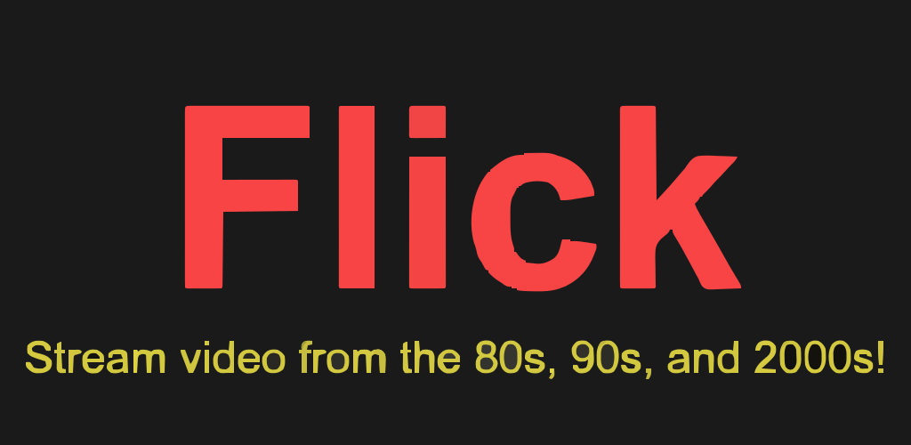

At age five, I fell in love with Super Mario Bros. on Nintendo (NES) and almost immediately wanted to be a programmer.
As the first in my family to earn a four-year degree, I ended up completing my B.S. in Computer Science at SNHU with a 3.9 GPA
I gained experience in things like:
low-level programming in C/C++
fullstack web (and cloud) development with JavaScript
mobile and backend development with Java
machine learning with Python
I recently engineered a video-streaming Android app (currently in closed testing) named "Flick", which is what the little cute birdie wanted to show you.
I can provide technical expertise, clear communication, and a positive attitude.
Whether designing a graphical interface or engineering a complex piece of software, I have a passion for excellence and always give 100% at anything I do. And I'm ready to see what's next!
Flick (Android)
Engineer: Matthew Pool

Synopsis
Flick is a vertical video app in the style of TikTok with an added discovery feature: a single sideways swipe reveals videos with significant similarity to the current one. Visual and auditory feedback educates users on app functionality and navigation, ensuring an optimal experience from first launch. Users interact via fire (like) and poop (dislike) icons, with video ID, view duration, and preference data uploaded to Firestore.
After an initial warmup period, the vertical feed operates on an intelligent cycle that prioritizes videos predicted to generate high engagement. The recommendation engine tokenizes Archive.org metadata and employs cosine similarity calculations weighted by view time and like/dislike ratios. Random content is interspersed to facilitate content discovery beyond the algorithm. The app prebuffers two upcoming videos by default, reducing to one when a qualified similar video exists at the current index. A history index tracks the last-viewed video, enabling users to recover from accidental swipes.
In this project, I've created a classic scene from Nintendo's Super Mario Bros. on Nintendo Entertainment System (NES).
I created all meshes/images seen here. Aside from the pipe, I completely coded all of the shapes and objects, and I positioned and scaled them in 3D space, and added lighting and movability. I also implemented 3D movement for the user.
The user can navigate the 3D scene and switch between an orthogonal and projection view to provide either a 2D or 3D perspective, as seen below.
After designing the user interface (UI) and user experience (UX) of this mobile app, I focused on creating a modern MVVM (Model-View-ViewModel) architecture with a repository pattern.
InventoryBuddy is a mobile app designed to allow access to a personal inventory of tracked items and quantities. Persistent memory and user login were implemented
in order to save inventory items to the app. The user may enable SMS notifications to receive warnings when an item is running low on supply. Contrast ratios of at least
3:1 (or 4.5:1 for smaller text) were implemented to aid in accessibility.
This project utilizes a Model-View-Controller (MVC) software design pattern, using a Dash dashboard, a MongoDB database, and Pandas for data manipulation. The Dashboard is designed to interact with the Austin Animal Center (AAC) "animals" collection, which holds data for cats and dogs that the AAC currently houses.
The dashboard integrates with my mongo_crud.py module to abstract away the tedious nature of connecting to a MongoDB database and executing basic create, read, update, and delete (CRUD) operations. Unit testing has been implemented, as well. The user can create new documents to be inserted into the "animals" collection of the AAC database, view (read) documents in the database by using custom query filters, update documents, and delete documents based on matching queries.
Check out my slideshow presentation video below to learn about cloud services and serverless functions.
Travel Web Site demo (HTML/CSS/JS)
The admin site and customer-facing site were created using the Model-View-Controller (MVC) architecture and the MEAN (Mongo-Express-Angular-Node) stack, along with Bootstrap CSS and Handlebars, with API endpoints tested using Postman. The admin can add or edit various vacation packages from a single-page application (SPA), and the customer may view various packages and meals or read the latest blog posts on the site.
As part of an experiential learning opportunity I took advantage of, I was able to receive this certificate for data analytics from uCertify.
Data Analysis Script (Python)
As part of my experience, I created a Python script that plots global temperature deviations, using a dataset from NASA. I utilized the Python libraries numpy, pandas, and matplotlib to do this. The output to this script may be seen below. This is a real-world example of using technology to interact with and understand data. I will use this experience in my future software development projects to integrate data analytics and machine learning into my software applications. Because without data, there is no app.
Working with a Deep Neural Network (DNN) model, I experimented with various hyperparameter values to find the optimal settings for image detection.
I also had the experience of optimizing a Deep Q-Learning (DQN) model for a gaming AI agent whose goal was to find the optimized path to its target. The report can be downloaded below.
I created the following report after studying and analyzing historical NBA Elo (relative skill level) data to predict the number of NBA regular-season wins, based on average points and average Elo of the teams. The results can be seen in the report below the following images.
This project involved choosing a previously written program and enhancing it in various ways. I chose a program I wrote a couple of years ago at SNHU. I knew this program needed lots of work in order to provide a better user experience and a more secure, robust application. I ended up making quite a few changes primarily in the areas of software engineering and design, databases, and data structures and algorithms. I go into more detail in my Code Review Video (below). You should check it out!
Project Details
This is a simple text-based program written in Java that keeps track of rescue animals.
The user can add new dogs and monkeys (using their names and other attributes) to temporary storage.
The user can also print out a list of dogs or monkeys or a list of all non-reserved animals.
To showcase my skills in software engineering, I decided to integrate input validation, error-checking, and JUnit testing, as well as JavaDoc documentation and basic refactoring. I also implemented a better user interface (and user experience) by customizing text colors and styles. I was able to communicate much better with the user this way.
I have improved both the overall enjoyability and robustness of the program. During this experience, I have strengthened my skills in software engineering, as well my skills in user experience (UX) design and software security.
Added JavaDoc documentation
Added Error-Handling and Input Validation:
Converted to Maven Framework:
Implemented JUnit Unit Testing:
Added Custom Text Colors and Styles:
Database Enhancement
I knew this program could really benefit from database implementation. This would allow saving records to persistent storage, instead of temporary memory that is lost when program execution terminates. To start, I created a database for dogs and a database for monkeys using hash maps with MapDB. I used the animal name as the key and the animal instance as the value. Any time the user adds an animal, the animal is added to both temporary memory and persistent storage.
At initial program execution, the records in permanent storage are loaded into the in-program data structures to ensure fast access and efficiency. Now, the animal objects persist across program executions, and valuable information is not lost. Hooray!
Added Persistent Storage:
Data Structure & Algorithm Enhancement
In terms of algorithmic efficiency and optimization, this program could use some tweaking. I ended up converting my main lists (dogList and monkeyList) from an ArrayList data type to a LinkedHashMap type. A LinkedHashMap uses key-value pairs and a doubly-linked list. This brings the worst-case time complexity down from O(n) to O(log n), where n is the number of animals in the list or map (respectively). In my new maps, I used the animal names as the keys and the associated animal instances as the values. I ended up using the entrySet method on the hash maps (dogMap and monkeyMap) to iterate through the values of each.
I also took advantage of the forEach method with a lambda expression to easily print out various instance values.
Optimized from O(n) down to O(log n) worst-case time complexity: